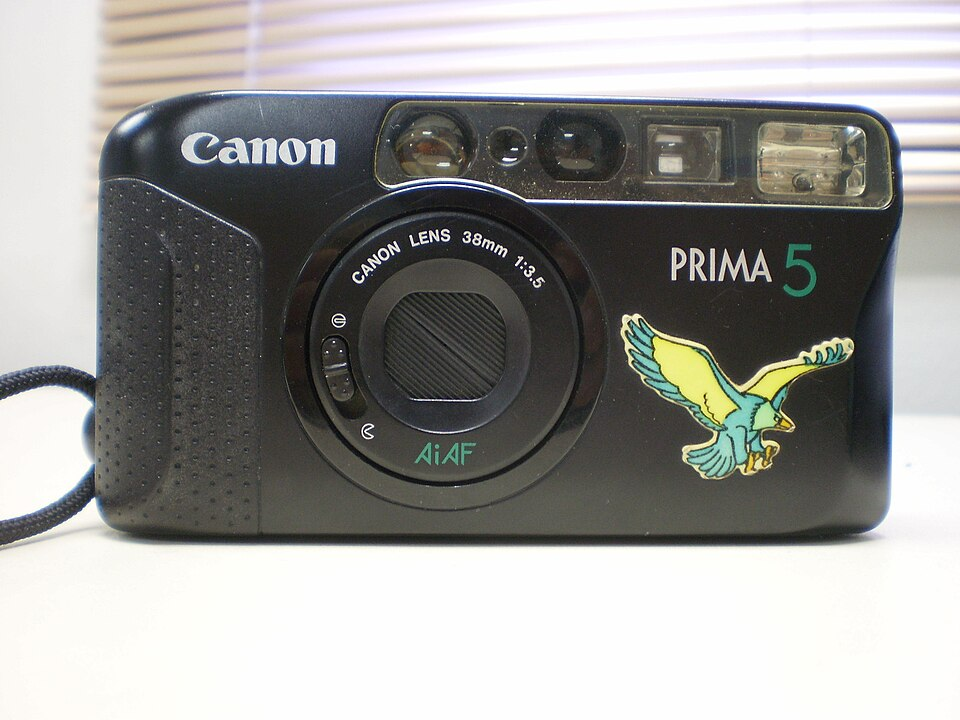

器材
党
全部器材
产品年表
名词百科
榜单
器材库
> 胶片袖珍相机（PS） > Prima 5
外部资料条目
：该型号位于原站列表页的失存区间内，本条依据公开资料整理，参数仅供参考，非存档原文。来源：
en.wikipedia.org

图片：
Wikimedia Commons
· Vee Satayamas · CC BY 4.0
佳能
Prima 5
分类
胶片袖珍相机（PS）
点评
0 条
图片
0 张
评测
0 篇
产品类型
胶片袖珍相机（PS）
发布时间
1991
规格参数
网友点评
(0)
产品图 / 样片
(0)
评测文章
(0)
规格总览
发布日期
1991
胶卷/胶片
35mm胶卷
产品类型
35mm袖珍相机
镜头及对焦
焦距
38mm
最大光圈
f/3.5
对焦方式
自动对焦
曝光控制
快门速度
1/8–1/250秒
胶卷感光度
ISO 25–3200
其它规格
电池
1×CR123A
尺寸
125×68×43mm
重量
245g
规格来源：
camerapedia.fandom.com
（外部公开资料整理，非原站存档原文，仅供参考）
该产品暂无存档的网友点评
该产品暂无存档的产品图
评测 / 相关文章
该产品暂无存档的评测文章